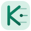

Pinned workspace · v—
Update available:
Unzip → chrome://extensions → Reload unpacked (or Load unpacked).
Opens LinkedIn profiles one-by-one in a KINETIC tab group, scrapes roles, saves, closes.
Idle.
Owner-only workflow. Saves scrape recipes to the CRM.
No captures yet.